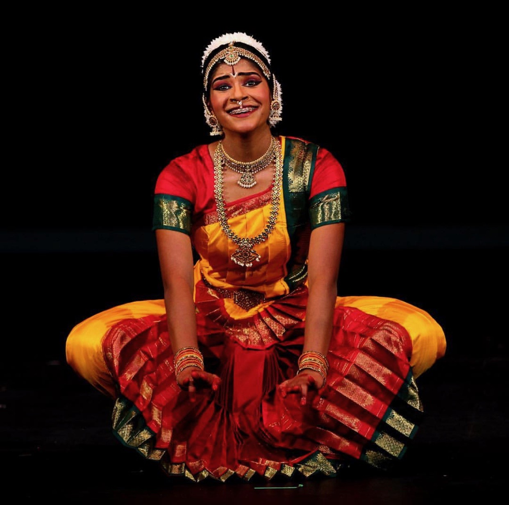

Archita Harathi
Welcome to my world.


About Me
Who am I?
I am a first-year undergraduate student, intersted in computer science, mathematics, and economics at Dartmouth College in Hanover, New Hampshire. I was born and brought up in Portland, Oregon.
What do I like to do?
LOTS of things! I've played a variety of sports throughout my life, soccer being one of my favorites.


I am also an Indian Classical dancer and singer.
At Dartmouth, I am a member of the Dartmouth Sings (an a cappella group), Smart Women Securities, Mock Trial, and WISP. I have also been a member of Dartmouth Raaz and the Dartmouth Mathematical Society.

But of course, computer science, specifically learning how to code and design, are some of my favorite things yet.
Future DALI-ite?
I am extremely excited to be applying to Darmtouth's DALI Lab! I'll be honest -- coding was never something I found interest in...until I took CS 1 my freshman fall and loved it! I thoroughly enjoyed the class and the logic behind programming, so when I heard about WISP, I applied specifically to be an WISP research intern with the DALI Lab. Working three other freshman women and an amazing professor and mentor, I have learned so so so much about coding and have realized that I might want to keep learning and doing it for the rest of my life!
I am tremendously grateful to have been exposed to DALI through WISP because I have firsthand seen the wonderful, giving culture of DALI and its people. I love the fun emojis people use in the slack, the help that people provide to anyone and everyone in coding or even just life advice, and the aura of positivity and talent that stream from the snack cabinet all the way to the comfy couches and the Mobamba pod. I know it's pretty cheesy, but even though I am technically not part of DALI (yet ;)), the lab has become a home for me on campus where I know I can make a new friend or learn a new skill or two (or twenty!). I am constantly amazed by the sheer knowledge and creativity that each person in the lab has and have truly been shown how the world can be changed by powerful, inspiring, and passionate people like the students at DALI. I would love to continue that legacy and be a model and inspiration to other freshmen in years to come.Thank you so much for the opportunity!
FUN STUFF HEHE
Wow, writing those paragraphs really touched my little heart and got me thinking about my amazing WISP group as our project comes to an end.
But alas, it's time for some fun factzzz!!!
hehe
I like to jump and make other people take pictures of me doing so!


hehe


I also have a really crazy popular successful amazing (or at least I call it that) VLOG CHANNEL!!! @architasarchannel Shoutout to my 7 subscribers (thx to those 7 email accounts I have).

yes, I watch my own vlogs occasionally
hehe